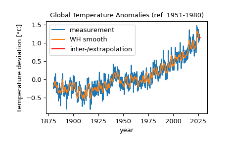

whittaker_henderson#
- scipy.signal.whittaker_henderson(signal, *, lamb='reml', order=2, weights=None)[source]#
Whittaker-Henderson (WH) smoothing/graduation of a discrete signal.
This implements WH smoothing with a difference penalty of the specified
orderand penalty strengthlamb, see [1], [2] and [3]. WH can be seen as a penalized B-Spline (P-Spline) of degree zero for equidistant knots at the signal positions.In econometrics, the WH graduation of order 2 is referred to as the Hodrick-Prescott filter [4].
- Parameters:
- signalarray_like
A one-dimensional array of length
order + 1representing equidistant data points of a signal, e.g. a time series with constant time lag.- lambstr or float, optional
Smoothing or penalty parameter, default is
"reml"which minimizes the restricted maximum likelihood (REML) criterion to find the parameterlamb. If a number is passed, it must be non-negative and it is used directly.- orderint, default: 2
The order of the difference penalty, must be at least 1.
- weightsarray_like or None, optional
A one-dimensional array of case weights with the same length as
signal.Noneis equivalent to an array of all ones,np.ones_like(signal).
- Returns:
- res_RichResult
An object similar to an instance of
scipy.optimize.OptimizeResultwith the following attributes:- xndarray
The WH smoothed signal.
- lambfloat
The penalty parameter. If the input
lambis a number, this value is returned. If the input was"reml", the penalty parameter that minimized the REML criterion is returned.
Notes
For the signal \(y = (y_1, y_2, \ldots, y_n)\) and weights \(w = (w_1, w_2, \ldots, w_n)\), WH of order \(p\) with smoothing or penalty parameter \(\lambda\) solves the following optimization problem for \(x_i\):
\[\operatorname{argmin}_{x_i} \sum_i^n w_i (y_i - x_i)^2 + \lambda \sum_i^{n-p} (\Delta^p x_i)^2 \,,\]where \(\Delta^p\) is the forward difference operator of order \(p\), \(\Delta x_i = x_{i+1} - x_i\) and \(\Delta^2 x_i = \Delta(\Delta x_i) = x_{i+2} - 2x_{i+1} + x_i\). For every input value \(y_i\), it generates a smoothed value \(x_i\).
One of the nice properties of WH is that it automatically performs inter- and extrapolation of data. Interpolation means filling in values when signal data is only available on the left and on the right. Extrapolation means filling in values after the observed signal ends. Set
weights = 0for regions where you want to extra- or interpolate. The values ofsignaldon’t matter ifweights = 0. WH interpolates a polynomial ofdegree = 2 * order - 1and it extrapolates a polynomial ofdegree = order - 1. Fororder = 2, this means cubic interpolation and linear extrapolation.References
[1]Whittaker-Henderson smoothing, https://en.wikipedia.org/wiki/Whittaker%E2%80%93Henderson_smoothing
[2]Eilers, P.H.C. (2003). “A perfect smoother”. Analytical Chem. 75, 3631-3636. DOI:10.1021/AC034173T
[3]Weinert, Howard L. (2007). “Efficient computation for Whittaker-Henderson smoothing”. Computational Statistics and Data Analysis 52:959-74. DOI:10.1016/j.csda.2006.11.038
[4]Hodrick, R. J., and Prescott, E. C. (1997). “Postwar U.S. Business Cycles: An Empirical Investigation”. DOI:10.2307/2953682
Examples
We use data from https://data.giss.nasa.gov/gistemp/ for global temperature anomalies, i.e., deviations from the corresponding 1951-1980 means (Combined Land-Surface Air and Sea-Surface Water Temperature Anomalies, Land-Ocean Temperature Index, L-OTI). We use weights to indicate where to inter- and extrapolate the missing data.
>>> from pathlib import Path >>> import numpy as np >>> import scipy >>> from scipy.signal import whittaker_henderson >>> # For the most recent data, use ... # fname="https://data.giss.nasa.gov/gistemp/tabledata_v4/GLB.Ts+dSST.csv" ... # Here, we instead use a copy made in 2026. ... fname = Path(scipy.signal.__file__).parent / "tests/data/GLB.Ts+dSST.csv" >>> data = np.genfromtxt( ... fname=fname, ... delimiter=",", skip_header=2, missing_values="***" ... ) >>> year = data[:, 0] >>> temperature = data[:, 1:13].ravel() # monthly temperature anomalies >>> w = np.ones_like(temperature) >>> # We might have some nan values. ... np.sum(np.isnan(temperature)) np.int64(10) >>> w[np.isnan(temperature)] = 0 >>> res = whittaker_henderson(temperature, weights=w) >>> temperature[:5] array([-0.19, -0.25, -0.09, -0.16, -0.1]) >>> res.x[:5] array([-0.18244619, -0.17823282, -0.17409373, -0.17080896, -0.16833158])
Let us plot measurements and Whittaker-Henderson smoothing.
>>> import matplotlib.pyplot as plt >>> x = year[0] + np.arange(len(temperature)) / 12 >>> plt.plot(x, temperature, label="measurement") >>> plt.plot(x, res.x, label="WH smooth") >>> # Above, we set w = 0 for nan values of temperature. WH automatically ... # inter- or extrapolates for all data points with w = 0. ... plt.plot(x[w==0], res.x[w==0], color="red", label="inter-/extrapolation") >>> plt.xlabel("year") >>> plt.ylabel("temperature deviation [°C]") >>> plt.title("Global Temperature Anomalies (ref. 1951-1980)") >>> plt.legend() >>> plt.show()

We can see that extrapolation has occurred at the right end of the signal, meaning that NaNs existed in the data for the most recent dates, in particular months of 2026 that have not yet happened at the time of the data download in March 2026.